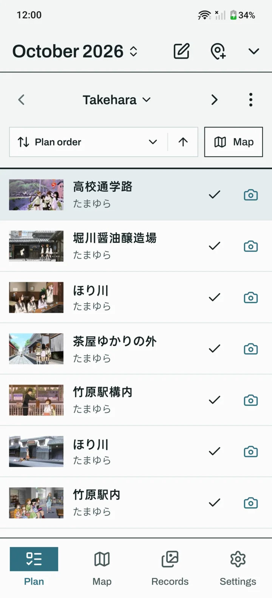
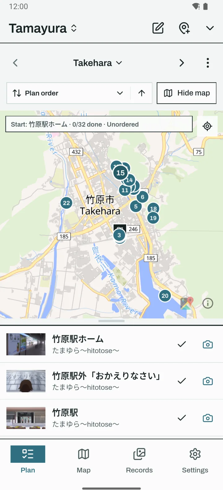
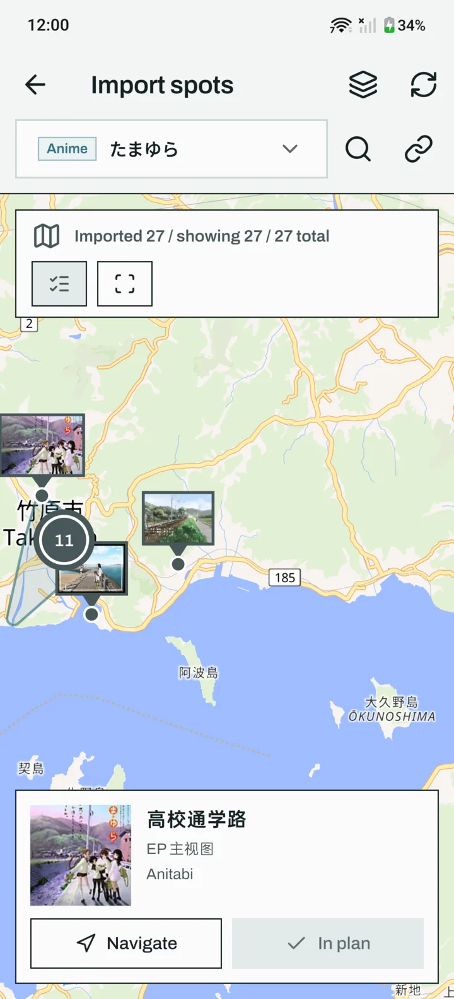
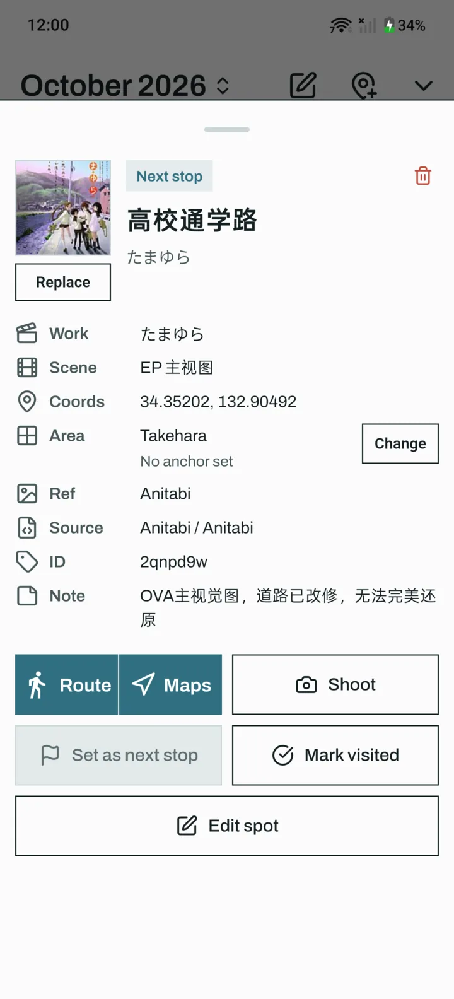
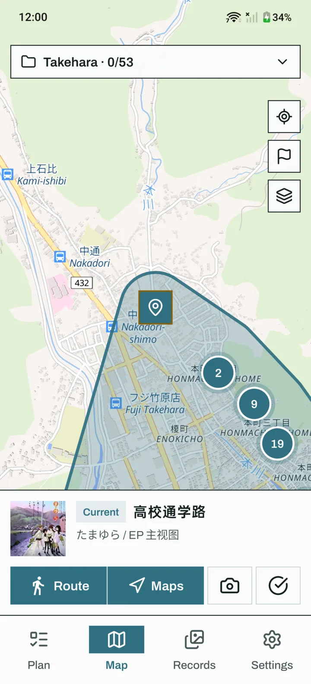
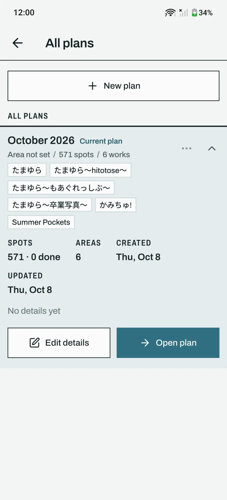
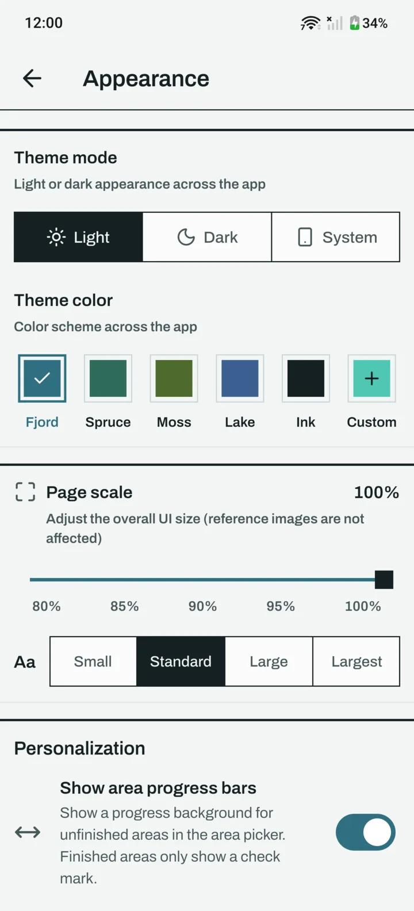
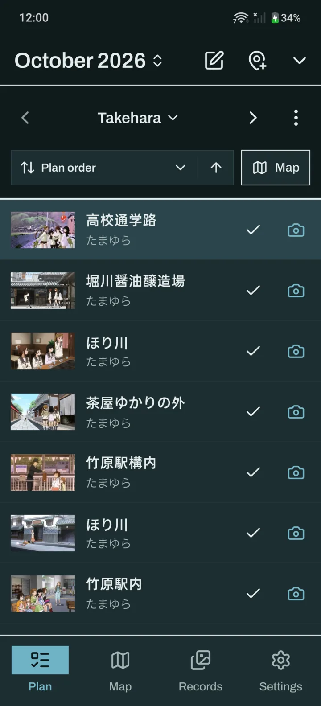

Plan the trip.
Shoot the frame.
Koma turns an anime's real locations into a walkable plan, then lines your camera up with the original frame so your photo matches the scene.
Free and open source. Android 7.0 or later. English and Chinese.
Frames first, everywhere








From episode to photo
- Find
Search an anime, or paste an Anitabi link
Koma shows every known location on a map, each with its frame from the show. Box-select a district to import it into an area in one go.
- Plan
Group spots into areas and pick the next stop
Reorder, mark visits, write notes, and cache the frames before you leave so the camera works with no signal.
- Shoot
Match the frame on the live camera
The anime frame sits over the viewfinder at the opacity you choose, or stacked above it, down to the ultrawide lens.
- Compare
Align, crop, colour-match and share
Line your photo up with the frame, crop it to match, match the colours, and export a side-by-side comparison. Originals are never changed.
Plans, photos and records stay on your phone. No account, no ads, no tracking.
Move plans between phones as .sjhplan files, records and photos included.
MIT licensed. Read the code, file issues, or build it yourself on GitHub.
Built on others' work
Koma is a fork of MiriaGo by BilyHurington and contributors. Spots and frames come from Anitabi and its contributors, work search from Bangumi, and maps from OpenFreeMap and OpenStreetMap contributors. Anime frames belong to their rights holders; Koma only fetches and caches them on your device.